역사 깊은, 실력있는,
새봄결치과
진료를 이어가는 가까운 자리에서,
한 자리에서 꾸준한 새봄결치과
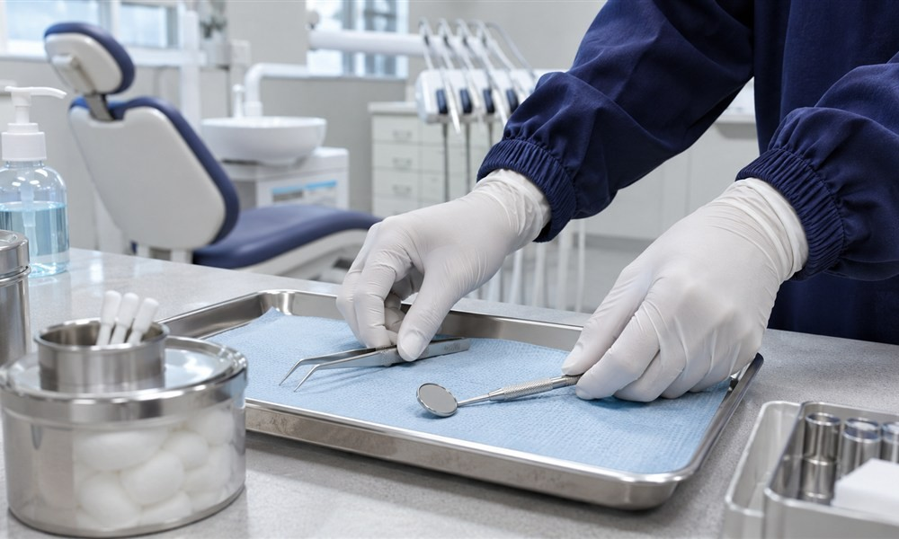
약 15년의 역사를 가지고 있는
시니어 임플란트 특화 치과,
새봄결치과
새봄결치과는 2012년 문을 열고 임플란트 상담과 진료를 이어 왔습니다. 중장년층은 치아 상태에 더해 복용 중인 약과 전신 질환까지 살펴야 합니다. 검사 자료를 바탕으로 수술 전 준비와 회복 일정을 개인별로 계획합니다. 중장년층의 임플란트 계획은 잇몸과 뼈 상태, 전신 건강을 확인한 뒤 세웁니다.
임플란트, 사랑니 발치 등
고난이도 외과 수술에
집중하는 치과
임플란트와 사랑니 발치처럼 외과적 판단이 필요한 진료를 함께 다룹니다. 의료진은 진료 기록을 검토하고 관련 교육과 임상 연구에 참여하며 경험을 쌓습니다. 그 내용을 다음 진료의 검사와 설명, 수술 계획에 반영합니다. 임플란트나 사랑니 발치가 필요할 때는 현재 상태를 확인하고 치료 방법을 상담합니다.
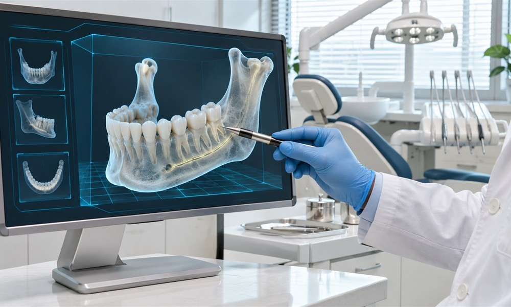
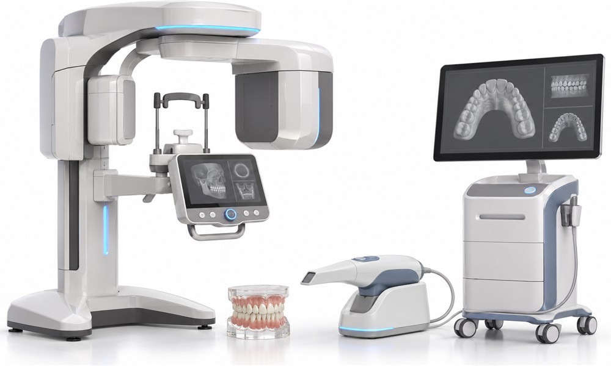
대학 병원식 고품격 의료장비와
수준 높은 진료 시스템
필요한 진료 분야와 치료 순서는 검진 결과를 확인한 뒤 결정합니다. 현재의 증상과 앞으로 예상되는 경과를 함께 검토해 치료 순서를 정합니다. 외과·보철·보존·교정 분야의 의료진이 필요한 자료를 공유하고, 한 분야의 처치만으로 해결하기 어려운 경우에는 의견을 모아 진료를 이어갑니다.
2010년부터 시작된
꿈을 그리는
새봄결치과
진료를 시작하기 전에는 필요한 변화와 우선순위를 정리해 의료진과 공유해 주세요.
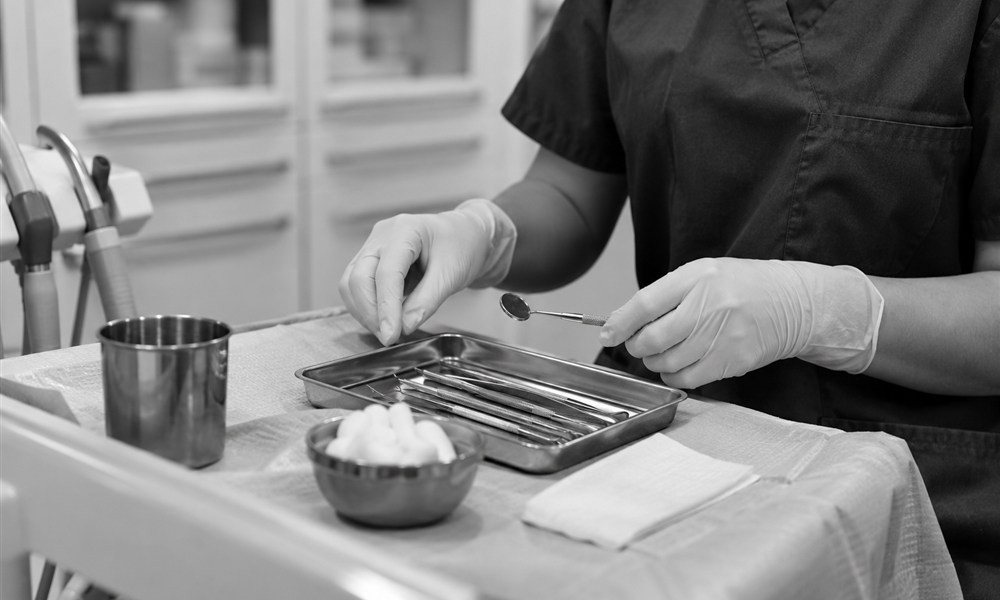
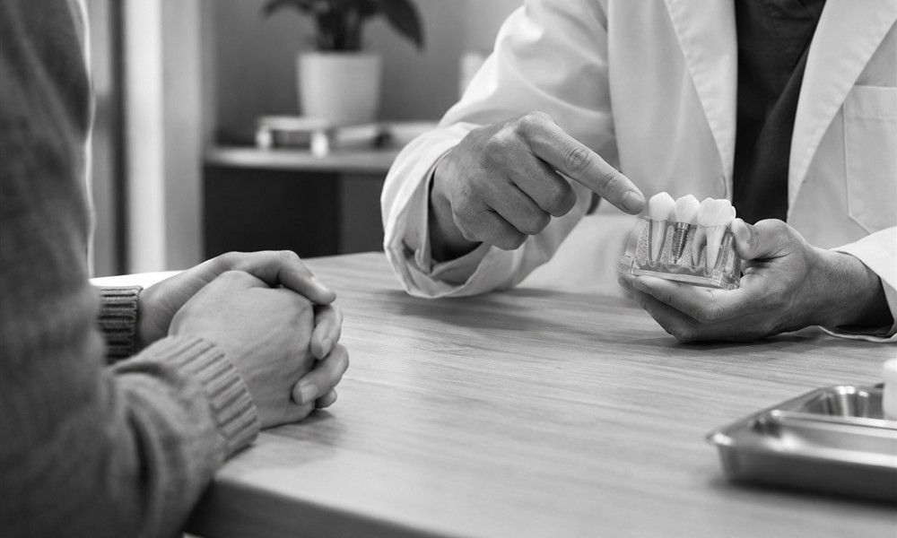
서로 다른 진료 환경에서 경험을 쌓은 의료진이 같은 진료 원칙을 두고 모였습니다. 한 사람의 판단에 의존하기보다 각자의 전문 분야에서 검사 자료를 살피고 필요한 의견을 나눕니다. 개원 때부터 외과 치료와 보철, 치아 보존, 교정이 함께 이어지는 진료를 목표로 준비했습니다.
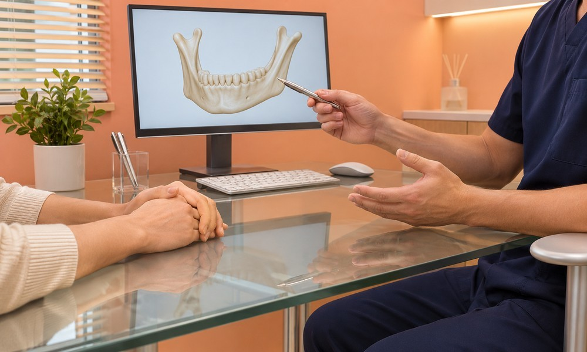
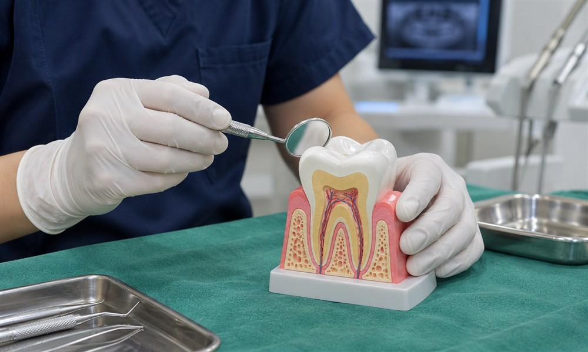
분야별 의료진이 검사 자료를 함께 살피는 협진 과정을 마련했습니다. 3차원 CT와 구강 스캐너, CAD·CAM 장비를 진료에 도입하고 자료를 다루는 방법도 익혔습니다. 장비를 갖추는 데서 그치지 않고 진단과 제작 과정에 어떻게 연결할지 계속 점검했습니다.
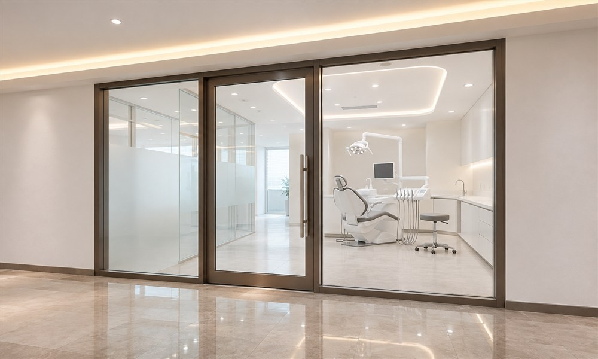
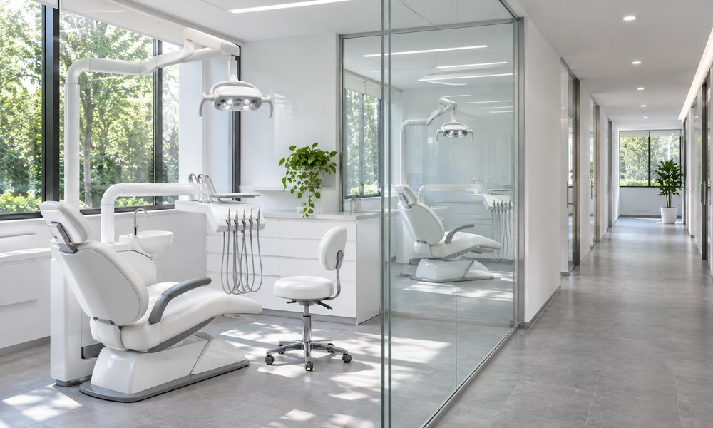
그동안의 임상 기록과 디지털 검사 자료를 바탕으로 진단과 치료 계획을 정리했습니다. 가까운 곳에서 상담과 사후 관리를 이어갈 수 있도록 새봄본점의 진료 경험을 나루점으로 넓혔습니다. 2019년부터 두 곳에서 같은 기준으로 내원 절차를 안내하고 있습니다.
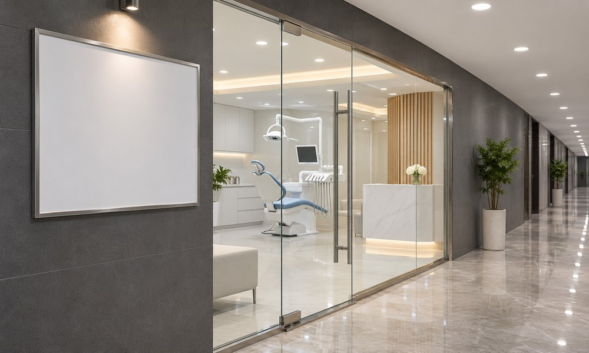
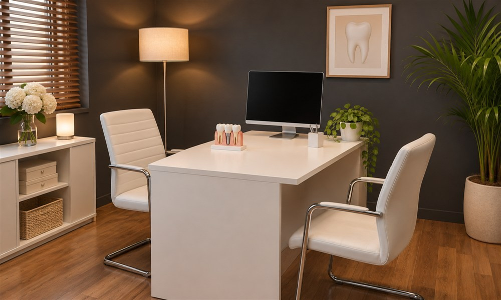
개원 뒤 진료 공간을 넓히고 내부 환경과 장비를 차례로 보완해, 더 편안한 동선과 안정적인 진료 환경을 마련했습니다.
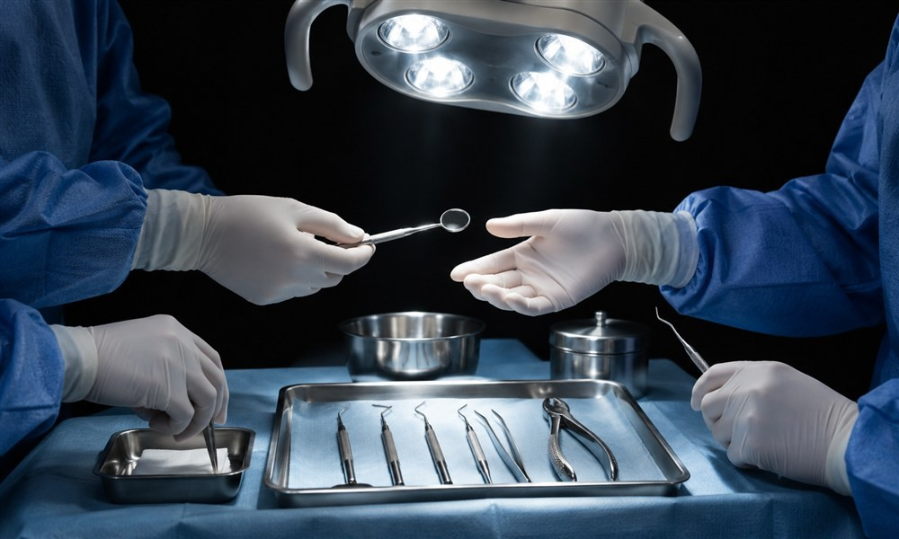
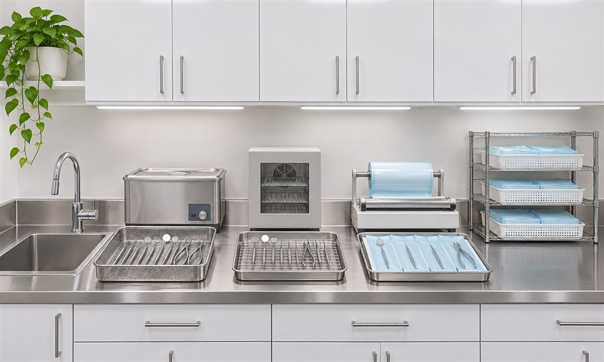
개원 이후 임플란트와 치아교정, 사랑니 발치 등 여러 진료 경험을 쌓았습니다. 쌓인 사례는 치료 선택지와 예상 경과를 설명하는 자료로 검토합니다. 진료 준비부터 사용한 기구의 세척과 멸균까지 감염 관리 순서를 정해, 의료진과 직원이 같은 절차에 따라 일하도록 관리합니다.
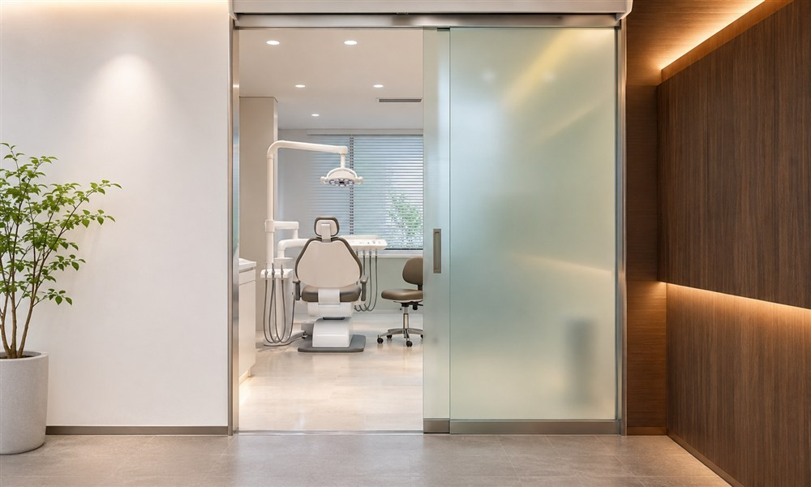
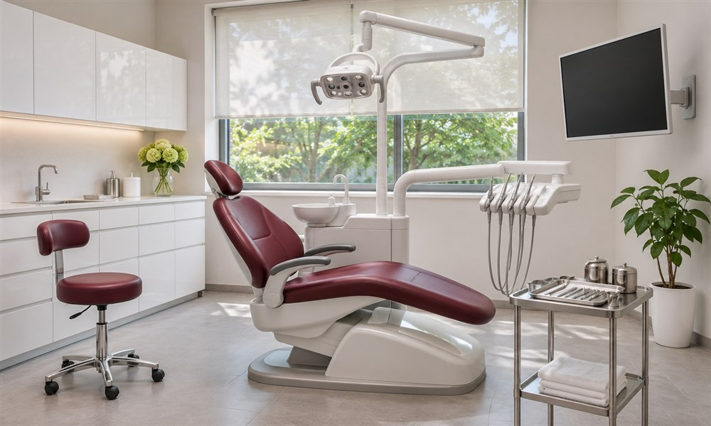
치과 치료가 두렵거나 긴장을 많이 느끼는 분을 위해 진정 진료를 도입했습니다. 적용 전에는 건강 상태와 복용약을 확인하고 적합한지 판단합니다. 별도 진료실에서 반응과 호흡 등 상태를 관찰하며 치료하고, 끝난 뒤에도 회복 상태를 확인합니다.
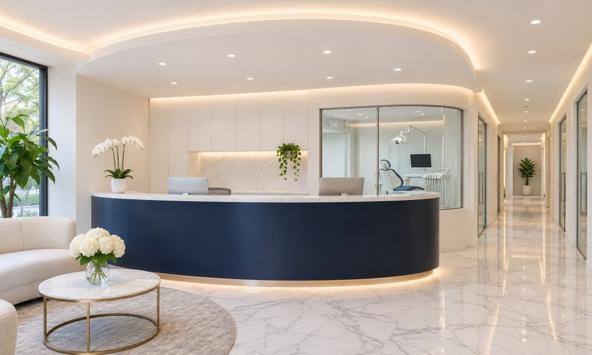
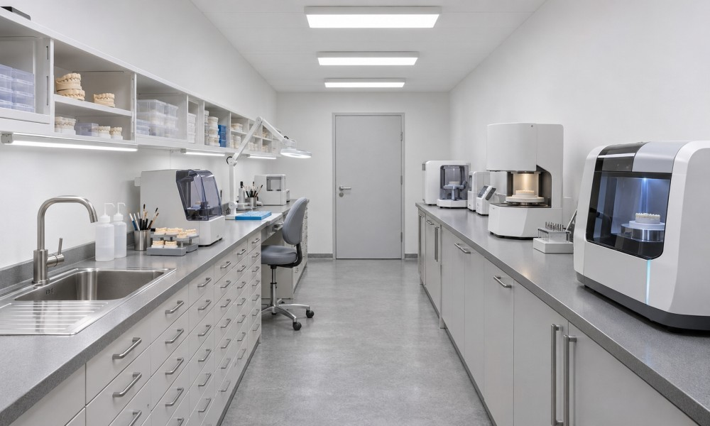
치아의 색과 형태가 고민인 분이 상담부터 제작, 관리까지 가까운 곳에서 이어갈 수 있도록 심미 보철 진료 공간을 마련했습니다. 진단과 보철 제작에 필요한 장비를 보완하고, 라미네이트의 적용 범위와 삭제량을 먼저 설명한 뒤 개인별 일정에 따라 진료를 준비합니다.
치과 치료,
아프고 무서운데…
걱정된다면
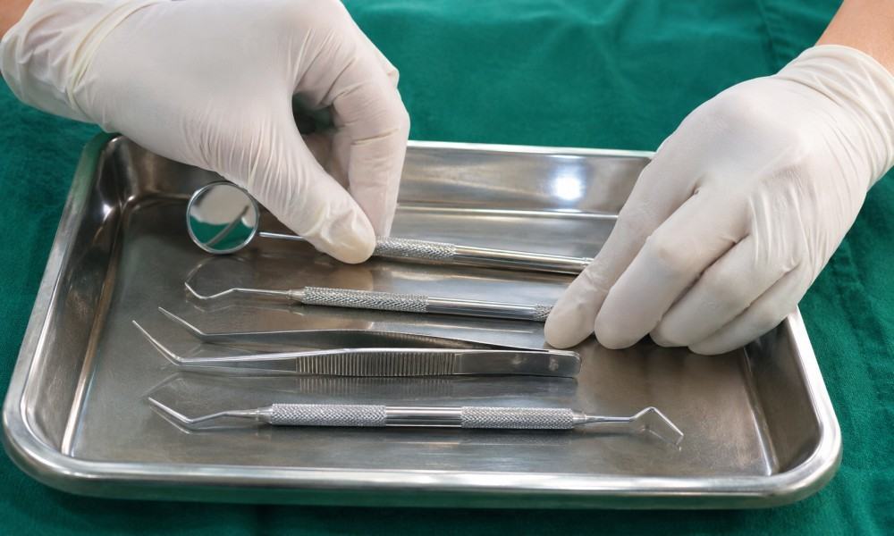
새봄결치과도
잘 알고 있습니다.
치료를 앞두고 아플까 봐 걱정되거나 낯선 기구가 무서울 수 있습니다. 의료진도 진료를 받아야 하는 순간의 긴장을 알고 있기에 그런 마음을 가볍게 넘기지 않습니다. 불편이 전혀 없다고 약속할 수는 없지만, 어떤 과정에서 무엇을 느낄 수 있는지 미리 설명하고 필요한 준비를 함께 합니다. 불편을 줄이기 위해 진료 전에 더 확인할 것은 없는지 살핍니다. 상담에서 들은 걱정을 다음 진료 준비에 반영합니다.
보다 덜 아프도록,
더 세심하게 진료합니다.
마취 방법은 치료 종류와 건강 상태, 불안 정도를 고려해 의료진과 상의합니다. 마취 주입 장비와 진정 방법을 건강 상태에 맞춰 검토해 긴장을 덜 느끼도록 진료 속도와 설명 방법도 함께 조정합니다.
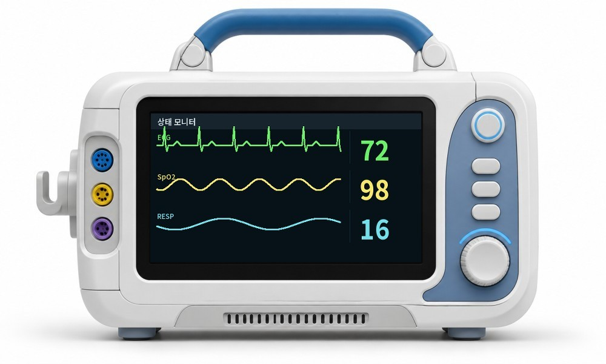
불친절하지 않을까…
걱정된다면
진료 과정에서 궁금한 점이나 불편한 부분은 담당자에게 말씀해 주세요.
치과 진료,
너무 비싼데…
합리적인 비용과
수준 높은 진료
치료 내용과 비용은 검사 결과와 계획에 따라 달라질 수 있으니 진료 전 항목별 설명을 확인해 주세요.
-
국산형 임플란트 국산
– 지르코니아 보철물 포함
– 뼈이식 별도72만원
40만원~
-
디지털 임플란트 국산
– 지르코니아 보철물 포함
– 뼈이식 별도89만원
50만원~
-
전체 임플란트 악당
760만원
399만원~
-
임플란트 틀니 악당
430만원
200만원~
치료 끝난 후에도
사후 관리를
잘 받을 수 있을까…?
치료를 시작하기 전에는 진료 계획과 사후 관리가 어떻게 이어지는지 확인해 두는 것이 좋습니다.
치과를 선택할 때는 진료 범위와 위치, 상담 절차를 먼저 확인해 보세요.
새봄결치과 역사
2025년 07월 기준